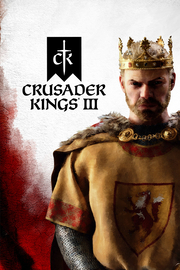

Crusader Kings III
Detalles
|  | |
| Tiempo de juego | No Jugado |
| Última actividad | Nunca |
| Añadido | 11/6/2024 14:41:31 |
| Modificado | 11/8/2024 17:34:28 |
| Estado de finalización | No Jugado |
| Librería | Playnite |
| Fuente | 6TB STORE |
| Plataforma | PC (Windows) |
| Fecha de lanzamiento | 9/1/2020 |
| Puntuación de la Comunidad | 90 |
| Puntuación de la Crítica | 91 |
| Puntuación de usuario | |
| Género | Estrategia Rol Simuladores |
| Desarrollador | Paradox Development Studio |
| Editor | Paradox Interactive |
| Característica | Cloud Saves Cromos De Jcj Jcj En Línea Logros De Multijugador Préstamo Familiar Remote Play En Tableta Un Jugador Workshop |
| Enlaces | Punto de encuentro Discusiones Guías Noticias Página de la tienda PCGamingWiki Logros Workshop |
| Tag | 4X Bélicos Economía Estrategia ETR Gestión Gran estrategia Históricos Las elecciones importan Medievales Modificables Multijugador Personalización de personajes Políticos Rol Sandbox Simulación Simulador de vida Tiempo real con pausas Un jugador |
Descripción
Tu legado aguarda. Elige una casa nobiliaria y lidera a tu dinastía a la grandeza en una epopeya de la Edad Media de varias generaciones. La guerra es una de las muchas herramientas que tienes para establecer tu reinado, ya que la estrategia real requiere diplomacia experta, conocimiento del reino y verdadera astucia. Crusader Kings III continúa la famosa saga creada por Paradox Development Studio, que combina la aclamada gran estrategia con un juego de rol medieval dramático y profundo.


- Toma el control de tu casa y amplía tu dinastía durante una Edad Media documentada al detalle. Empieza en el 867 o en el 1066, y reclama territorios, títulos y vasallos para conseguir un reino digno de tu sangre real. Tu muerte solo es un detalle, pues tu linaje continúa con nuevos herederos jugables, dispuestos o no por ti.
- Descubre un mundo simulado en expansión lleno de plebeyos y caballeros, cortesanos, espías, truhanes y bufones, y romances secretos. Un reparto bien nutrido de personajes históricos que puedes enamorar, traicionar, ejecutar o influir sutilmente.
- Explora un gran mapa medieval que va desde los territorios nevados del norte hasta el Cuerno de África, y desde las islas británicas al oeste hasta las riquezas exóticas de Birmania al este. Reclama, conquista y gobierna a miles de países, ducados, reinos e imperios únicos.
- Cada personaje es más profundo de lo que imaginas, ya que sus rasgos y elecciones vitales determinarán sus acciones y planificaciones. Gobierna con el miedo con tu puño de hierro o inspira a tus súbditos con tus hazañas magnánimas. La genética es innegable y tus hijos heredaran una inteligencia desbordante o una estupidez incapacitante.
- Consigue los tutores adecuados para tu heredero o edúcalo tú mismo. Si tienen aspiraciones, cásalos o líbrate de ellos por otros medios.
- Personaliza a tu gobernante y su casa nobiliaria, tanto su apariencia como sus atributos, y crea a un monarca digno de todas sus virtudes y vicios heredados.
- Gobierna un reino que evoluciona constantemente y concede títulos a quien tú prefieras; o vence al señor feudal y reclama la corona para ti. Ten cuidado con las amenazas, que pueden ser desde sirvientes descontentos hasta concubinas vengativas.
- Las sombras se agitan con frecuencia y el peligro acecha en cada esquina oscura. Recluta a agentes y a otros personajes indeseables para debilitar, chantajear o asesinar a quienes se interponen en tu camino. O déjate inspirar por las canciones de los bardos y consigue poder e influencia mediante la seducción.
- Correrá la sangre. Reúne a unidades de soldados y caballeros poderosos. Gestiona a tus ejércitos y tus tácticas en la batalla. Asalta y saquea territorios cercanos o contrata a mercenarios y a órdenes sagradas para las guerras importantes.
- Encarna a un rey piadoso para atraer a los poderes religiosos o diseña tu propia religión mientras te debates entre la fama o la condenación eternas.
- Introduce innovaciones en la cultura y levanta poderosos castillos y bastiones para aumentar la riqueza, el prestigio y la seguridad de tu reino.
- Puedes seguir una cantidad ilimitada de caminos: disfruta de miles de eventos dinámicos y toma decisiones fundamentales adaptadas a todas las situaciones y personajes concebibles. Hay incontables formas de garantizar tu paso a la posteridad.